Sekilas Tentang
Aplikasi manajemen pemesanan transportasi logistik dengan memenuhi kebutuhan pengiriman berbagai jenis muatan serta monitoring seluruh unit logistik.
Daftar SekarangBENEFIT LOGTRACK
Apa saja yang ada di logtrack
Tracking Delivery
Lacak pengiriman dan arus barang dengan mudah dalam satu platform.
Real-time Notifications
Dapatkan notifikasi secara real-time setiap aktivitas pengiriman berlangsung.
Detail Reporting
Dapatkan laporan lengkap terkait pengiriman, armada driver, dan durasi aktivitas.
Back-office Dashboard
Pantau aktivitas dengan dashboard yang mudah digunakan, mempermudah pengelolaan operasional bisnis.
KEMUDAHAN DALAM SETIAP PERAN
Aplikasi Logtrack memiliki 3 tipe user
- Dashboard Order
- Request Order
- Tracking Order
- Tracking Order
- Dashboard Summary
- Manage Order
- Confirm Order
- Schedule Order
- Live Report Order
CARA KERJA LOGTRACK
Customer Request Order
Permintaan pengiriman barang, menetapkan lokasi awal hingga lokasi tujuan akhir.
Foreman Manage Order
Mengkonfirmasi request order dan mengatur delivery order kepada driver.
Driver on Delivery
Mengirimkan pesanan dari titik awal ke tujuan, hingga selesai order.
KENAPA MEMILIH LOGTRACK
Meningkatkan Efisiensi
Dengan LogTrack, proses pengiriman lebih efisien, sehingga bisnis Anda berjalan lebih lancar dan cepat
Aman dan Terpercaya
Semua data pengiriman dan lokasi Anda disimpan dengan aman dan bisa diakses kapan saja dengan mudah
Kemudahan Penggunaan
Aplikasi kami dirancang user-friendly, sangat mudah digunakan baik di desktop maupun perangkat mobile.
Optimalkan Pengriman Anda Dengan Logtrack!
Mulai Sekarang dan nikmati layanan tracking pengiriman barang terbaik untuk bisnis Anda!
IDR 20.000/user/Bulan
Logtrack tersedia di